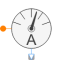

MagneticPotentialSensorSensor to measure magnetic potential |

|
Information
This information is part of the Modelica Standard Library maintained by the Modelica Association.
Sensor for magnetic potential difference.
See also
Connectors (2)
| V_m |
Type: ComplexOutput Description: Complex magnetic potential as output signal |
|
|---|---|---|
| port_p |
Type: PositiveMagneticPort Description: Magnetic connector of sensor |